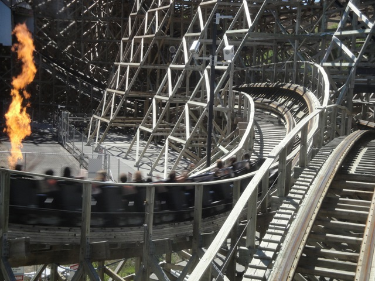
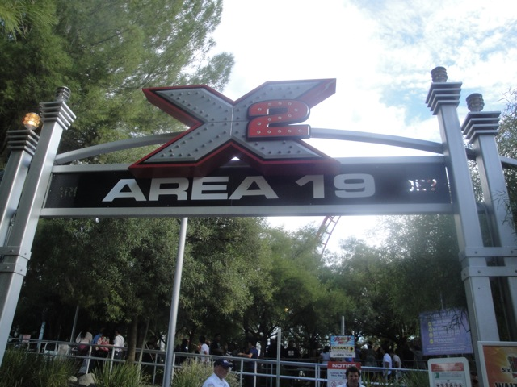
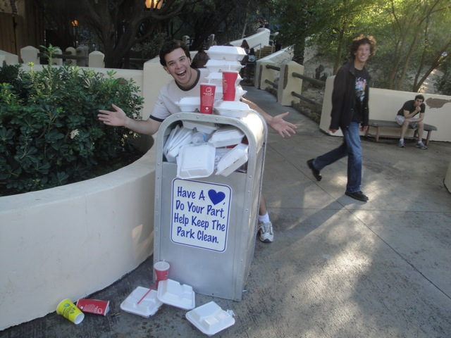
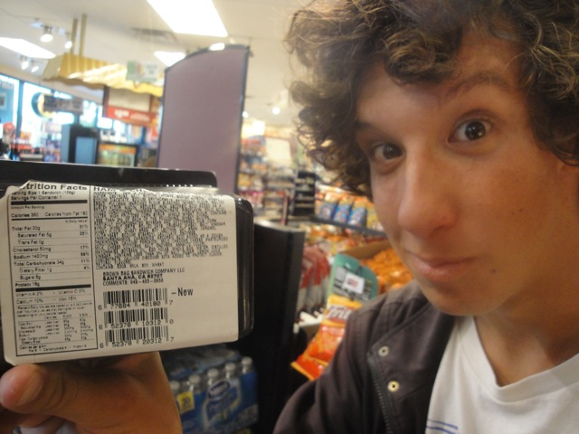
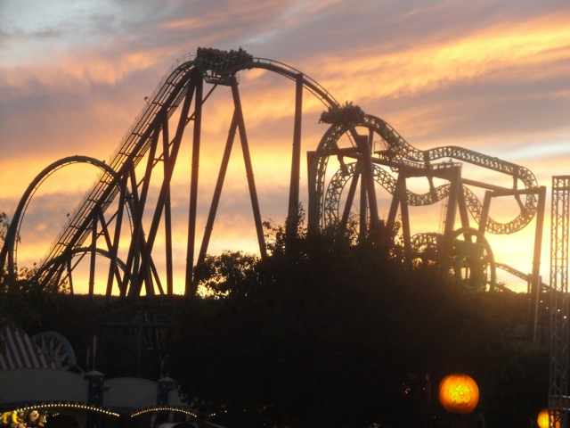
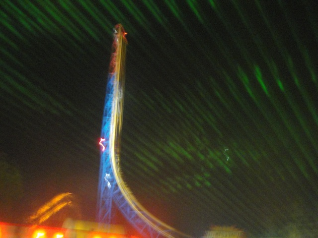

Fall 2011 Photos
Six Flags Magic Mountain Disneyland Resort
Well, October has come once again, and as always, it's time for our Fall "Insert Year Here" Photos Update. This year, we'll be starting at Six Flags Magic Mountain for some seriously awesome fun, oh and as always, it's two October Visits in one update (Looking foreword to riding you Lex Luthor).
All right. Lets start off with a typical front row morning ride on Goliath.
"Dammit!!! I thought I'd promised I would stop doing this type of stuff at SFMM!!!!"
Damn!! Only 5 minutes!!! Something tells me that sign isn't so accurate.
And apparently the park thought so too since on our 2nd Visit, it was posted as an hour.
 Like always, Scream was running well.
Like always, Scream was running well.
While Batman the Ride was running WCB Style with lights and fog, it was much weaker than it was at Westcoast Bash and the line was huge, so we only got on during the day.
*sigh* Wake me up when its time for Westcoast Bash 2012.

We also took a spin on Terminator/Apocolypse/SFMM's GCI for some GCI goodness.
Unfortunetly, this was the last time we ever got on Log Jammer as it closed the next day. =( I knew this months ahead due to working at the park, but yeah. It's still really sad since it was a really good log flume. But more fun, was soaking people on Log Jammer. That was hilarious. Especially soaking Pink Sweater Girl, who you can see getting soaked here.
Warning. Antonio will be lurking around here at night. Beware.
Who knew a unicycle could double as a pillow.
Why did I include this building in the update? No real reason. It just looks cool.
We decided to go have lunch at Johnny Rockets for a change. Yeah, we had a good meal.
"Don't worry. I'm thinking of all the thirsty people for you."
Take your medicine!!! It'll make you normal!!!
When we saw that the circus was in town, we just had to stop by.
"YAY!!!! I FINALLY FOUND A JOB!!!!!"
We decided to take another spin on the Valencia Carousel. Why? We're f*cking insane. That's why.
Think the teacup on this carousel can't spin? Watch our video of us on it here and then see just how much it can spin.
"Hey Cody!! Don't forget to pick up your Orange Julius!!!"
"I wanna go ride Deja...Oh. Well, how about a quick ride on Log...DAMMIT!!!!!!"

Well X2 is still here. And that's what's truely important.
Can you say "Epic Win?"
 Unfortunetly, the special Area 19 soundtrack wasn't working. =( That was a real bummer since that's much better than the normal soundtrack. But oh well. It's still X2.
Unfortunetly, the special Area 19 soundtrack wasn't working. =( That was a real bummer since that's much better than the normal soundtrack. But oh well. It's still X2.

"I ate this much Panda Express!!!!"
 Yeah. We had a Viper Marathon today.
Yeah. We had a Viper Marathon today.
 While it may have been rough, Viper was hauling ass today!!! It simply whipped through all the loops and never slowed down!!!
While it may have been rough, Viper was hauling ass today!!! It simply whipped through all the loops and never slowed down!!!
 Dear Six Flags, when you notify of a single riders line, please actually HAVE IT!!! Or at least take down the sign if you won't put in the Single Riders Line.
Dear Six Flags, when you notify of a single riders line, please actually HAVE IT!!! Or at least take down the sign if you won't put in the Single Riders Line.
 "Hey Antonio!! Need some hair gel?"
"Hey Antonio!! Need some hair gel?"
"But if its ready to eat, why isn't you washed it? And if it's not washed, it's not ready to eat. You fail Gas Station. You fail big time."

"Should there be this many ingredients in a Ham & Cheese Sandwich?"
 "Is this true Ceaser? Did you donate to Breast Cancer?"
"Is this true Ceaser? Did you donate to Breast Cancer?"

Ooh. Green Lantern at Sunset.
 Hey. It's October at Six Flags Magic Mountain!! You know what that means!!!!
Hey. It's October at Six Flags Magic Mountain!! You know what that means!!!!
 INFLATABLE SPIDERS HAVE INVADED COLLOSUS!!! RUN!!!!! THEY MAY COME FOR YOUR HOUSE NEXT!!!!!
INFLATABLE SPIDERS HAVE INVADED COLLOSUS!!! RUN!!!!! THEY MAY COME FOR YOUR HOUSE NEXT!!!!!
 That, and Collosus is running backwards!!! Which is as always, f*cking sweet!!!
That, and Collosus is running backwards!!! Which is as always, f*cking sweet!!!
 It's amazing how simply facing the other way can make the ride so much better.
It's amazing how simply facing the other way can make the ride so much better.
Yeah!! This is just as epic as you would suspect it is!!
Still the best maze at Fright Fest.
Fire always makes for a better Fright Fest.
Ooh. Trippy.
"You look like a lesbian version of the Canadian Ear Rapist."
Hey look!!! We found Antonio!!! =)
"DAMN ANTONIO!!!!! YOU'RE SCARY!!!!!!"
This was one of the new mazes. It was cool since it had fire, but Jokers Hideout is still better.
You can tell it was a new maze since the line for it was ridicolous!!
 Riddlers Revenge was hauling so much ass, its got motion blur!!! Ok, that's from me not using a flash, but it was seriously hauling both nights we were at Fright Fest.
Riddlers Revenge was hauling so much ass, its got motion blur!!! Ok, that's from me not using a flash, but it was seriously hauling both nights we were at Fright Fest.
"Dammit!!! Who bled all over the path!!! Now we have to call first aid and the janitor!! Glad I'm not working tonight."

Yeah. Superman at night is seriously awesome!!
"Why Ms. Fright Fest Monster, I'd say you were trying to seduce me."
 Yeah. I really like the lines Fright Fest is giving us.
Yeah. I really like the lines Fright Fest is giving us.
And remember, this blood curdling update is brought to you by Fanta.
Disneyland Resort
Home